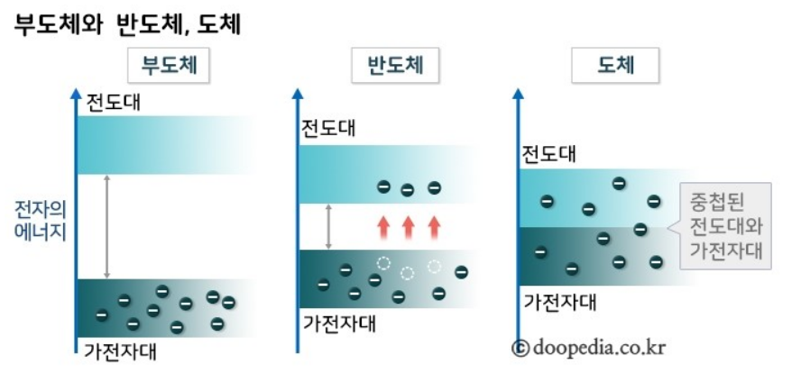

전기전도도에 따른 물질의 분류 가운데 하나로 도체와 부도체의 중간영역에 속한다. 순수한 상태에서는 부도체와 비슷하지만 불순물의 첨가나 기타 조작에 의해 전기전도도가 늘어나기도 한다. 일반적으로 실온에서 10-3~1010Ω·cm 정도의 비저항을 가지나 그 범위가 엄격하게 정해져 있지 않다. 전기전도도에 따라 물질을 분류하면 크게 도체, 반도체, 부도체로 나뉜다.